Используйте астрологию, как самые богатые и успешные люди в мире
Узнайте таланты, которые были даны с рождения
Осознайте цель жизненного пути и значение важных событий
Разберитесь с препятствиями, которые отделяют вас от успеха
Начинайте важные дела в удачные дни, когда сопутствует удача звезд
Поймите особенности характера и мышления своих близких и друзей
Научитесь находить подход к любому человеку, зная его натальную карту

 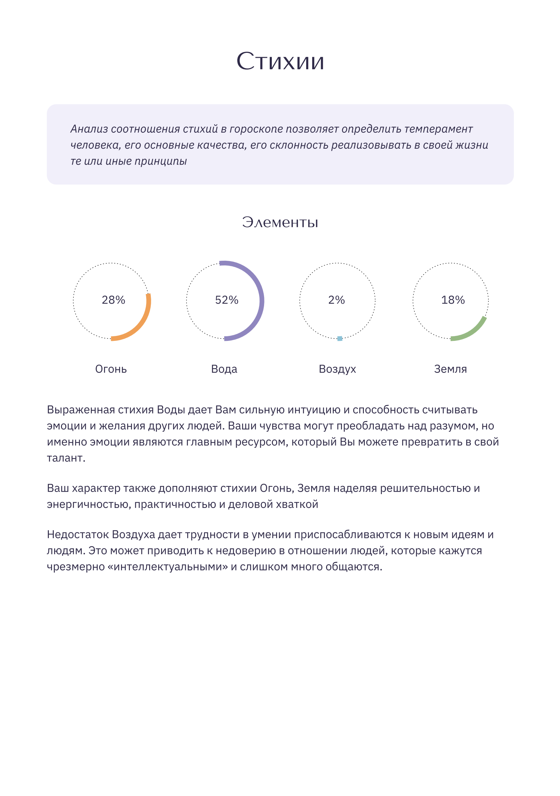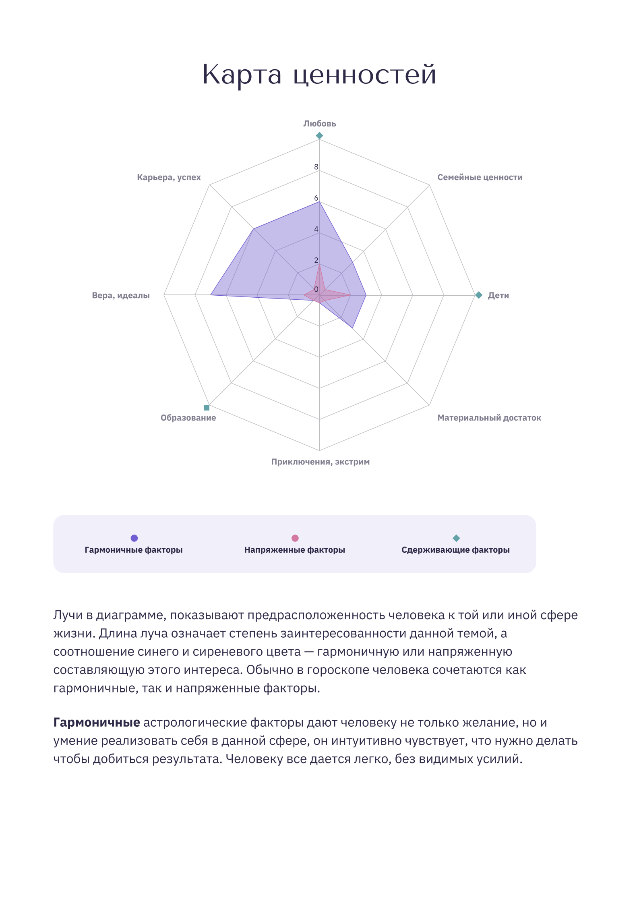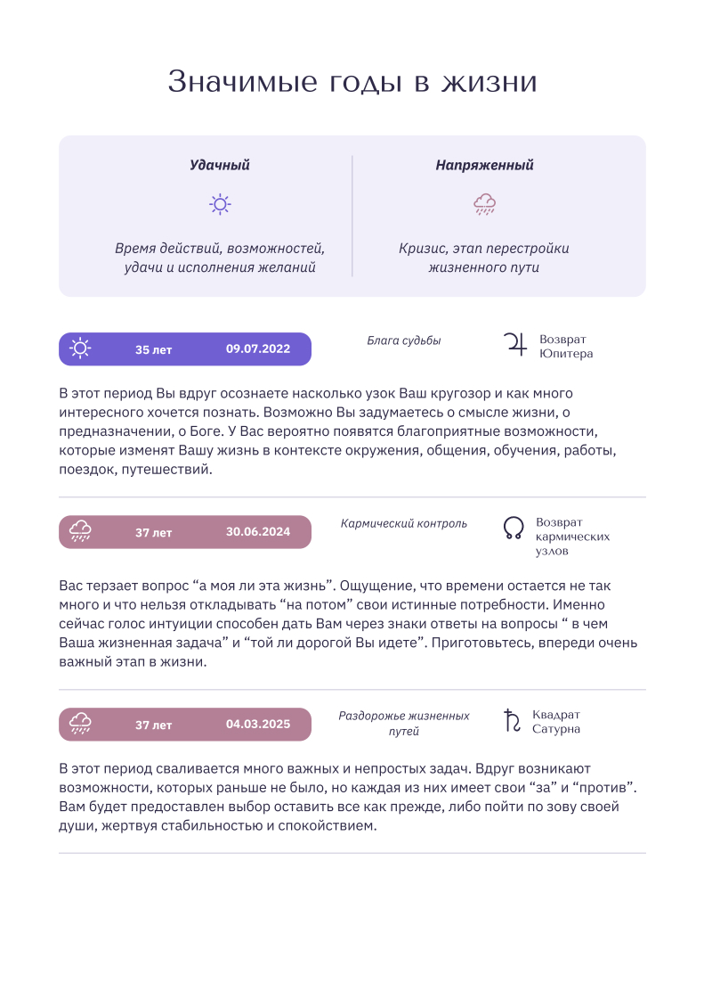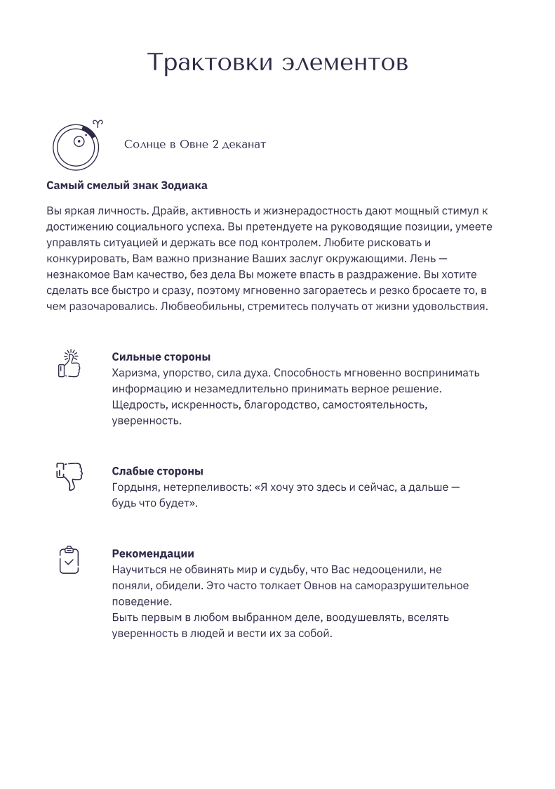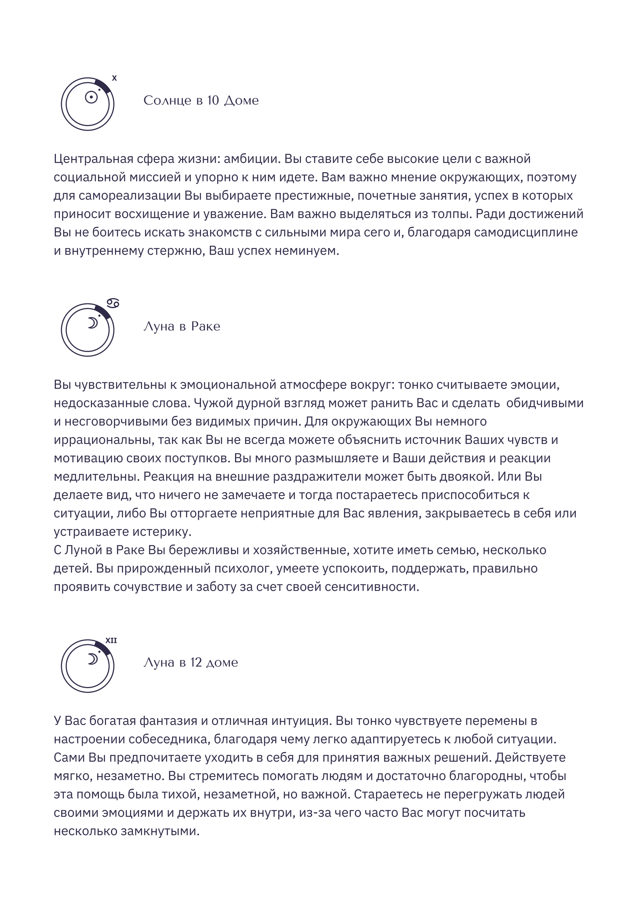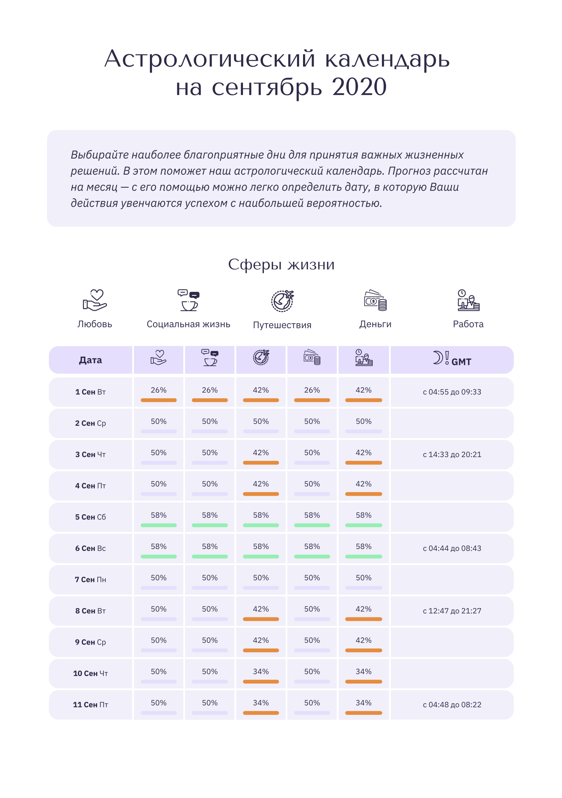
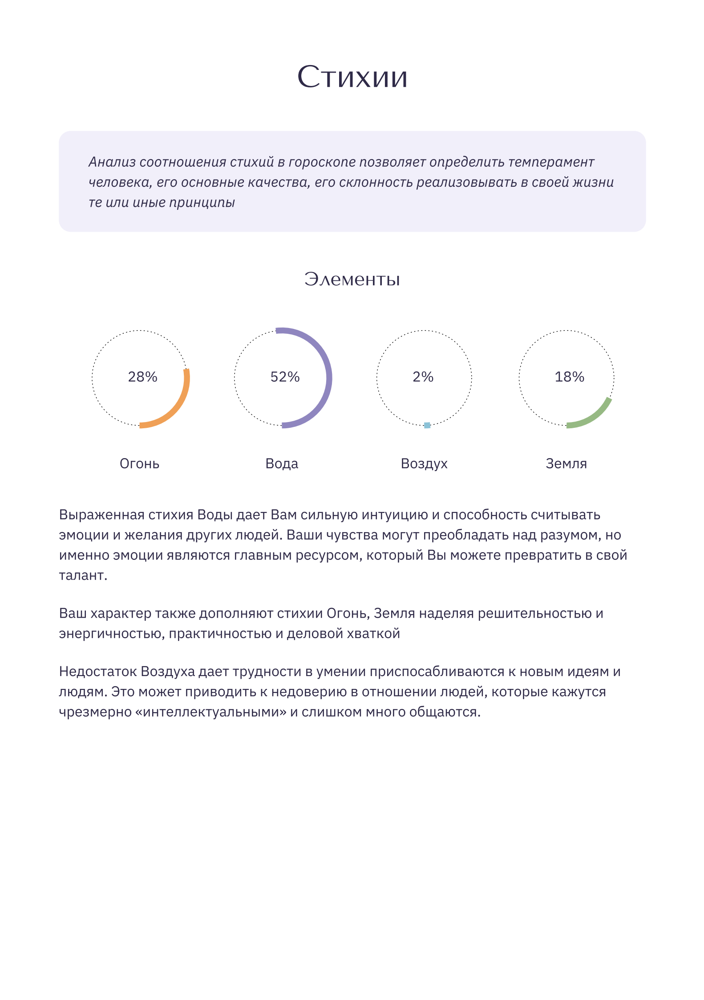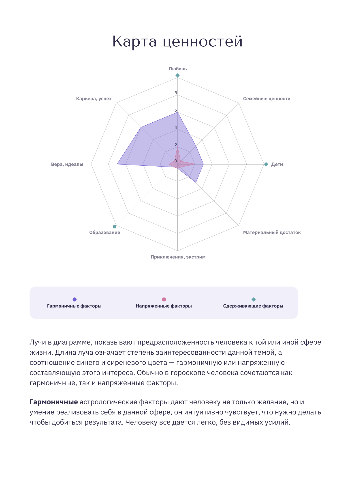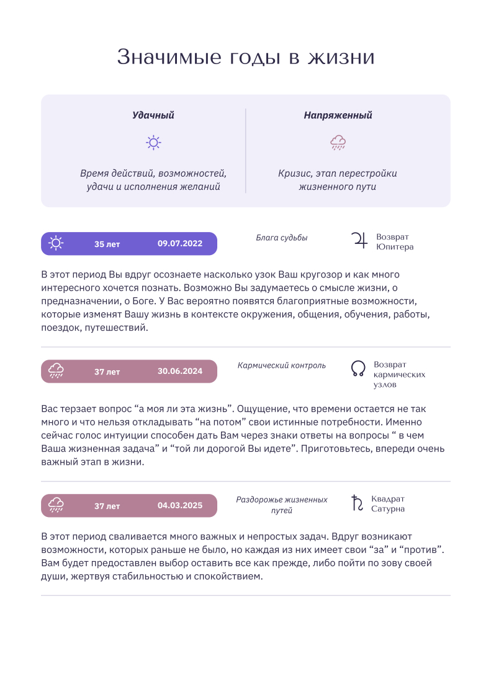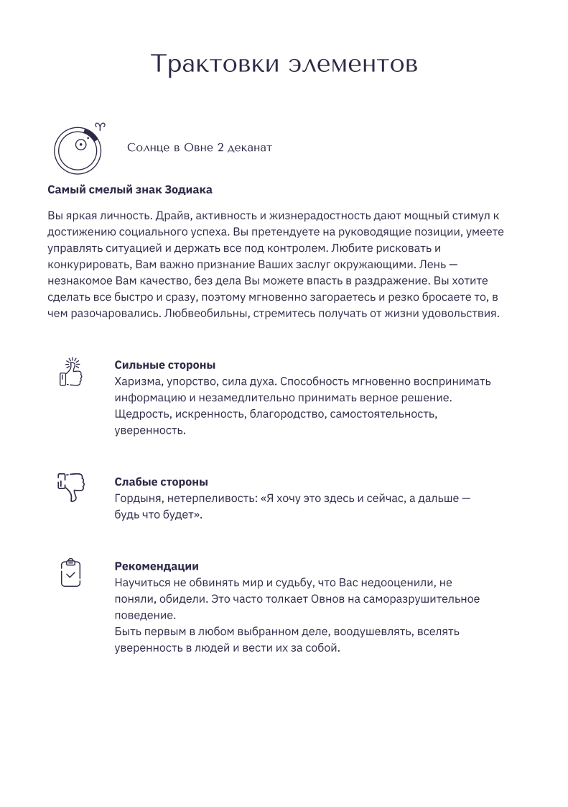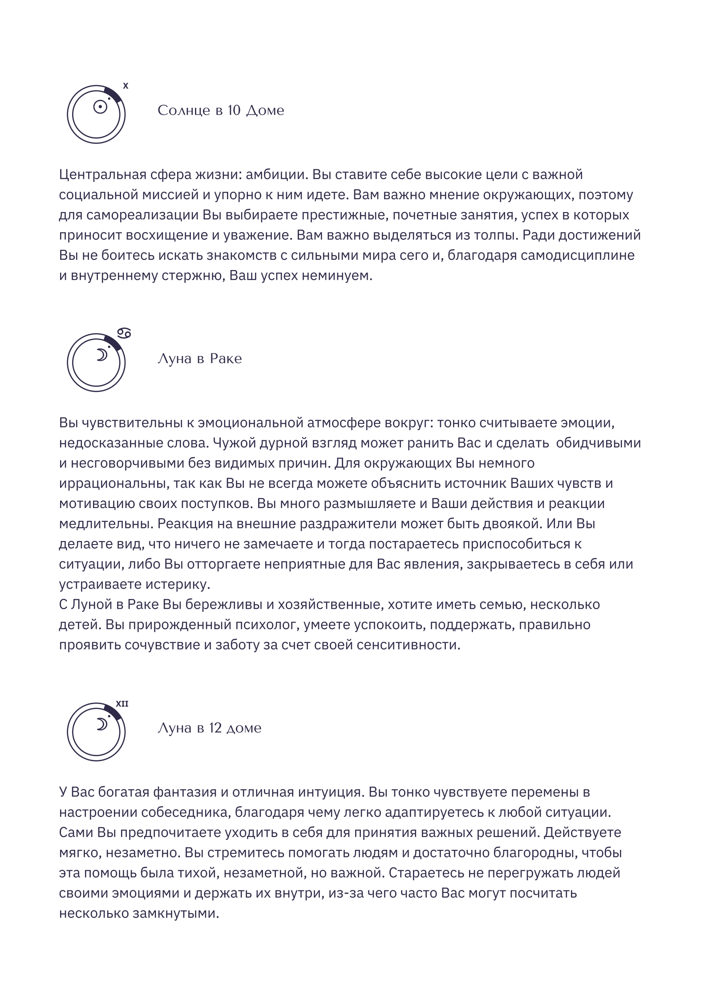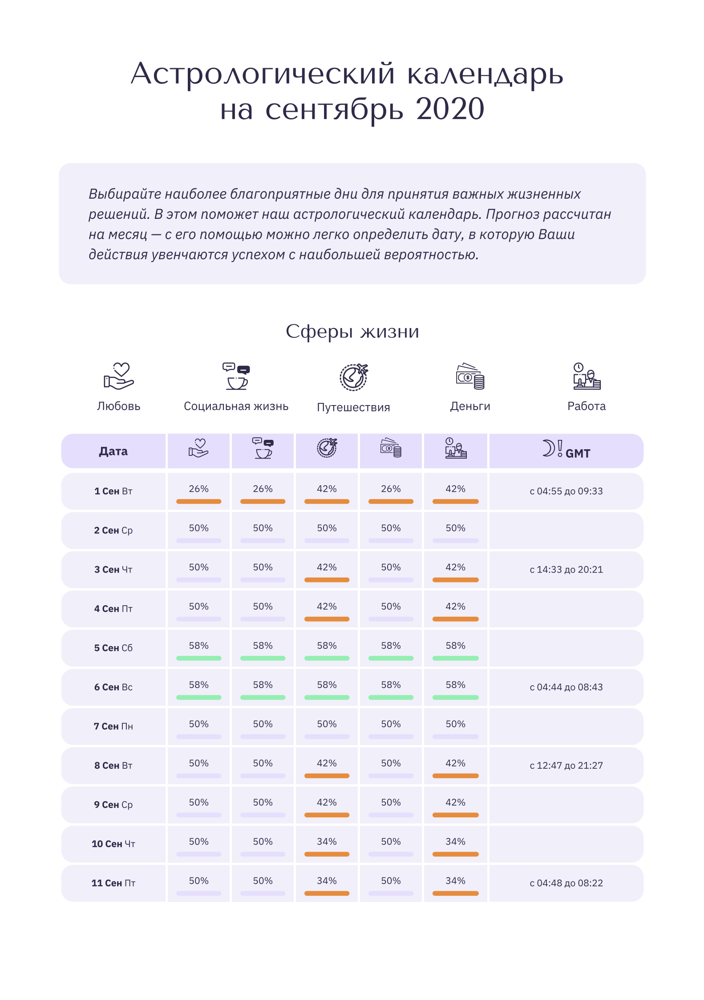